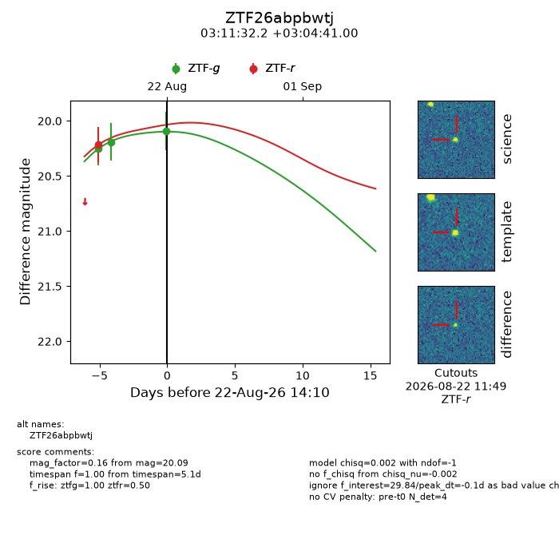
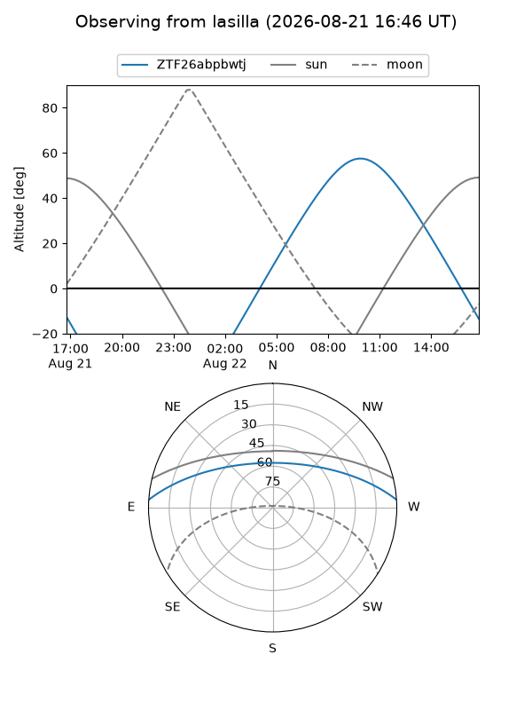
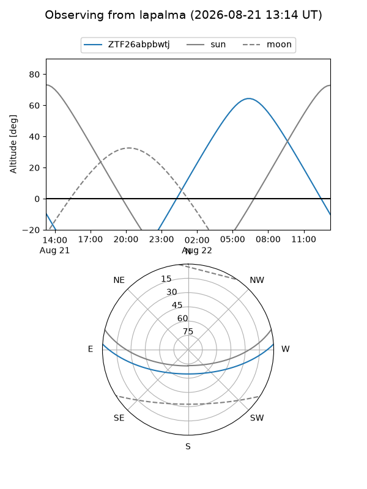
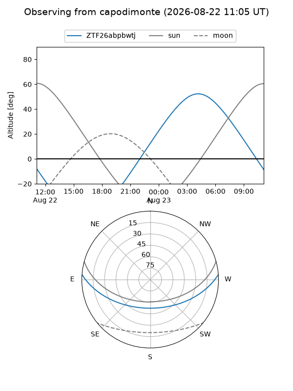
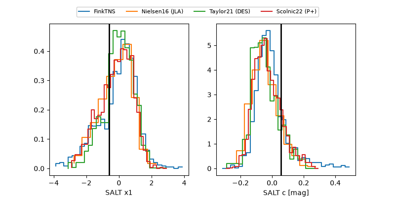

ZTF26abpbwtj
Target ZTF26abpbwtj at 2026-08-22 14:13
Aliases and brokers:
FINK-ZTF: ztf.fink-portal.org/ZTF26abpbwtj
Lasair-ZTF: lasair-ztf.lsst.ac.uk/objects/ZTF26abpbwtj
ALeRCE-ZTF: alerce.online/object/ZTF26abpbwtj
Direct TNS query: direct search
alt names
ZTF26abpbwtj (ztf,fink_ztf)
Coordinates:
equatorial (ra, dec) = 47.8841,+3.07806
equatorial (HMS+DMS) = 03:11:32.19,+03:04:41.00
galactic (l, b) = (176.6531,-44.69073)
Flags:
peak dt: -0.1
Photometry:
last ztfg=20.09, ztfr=20.22
3 ztfg, 1 ztfr detections
Lightcurve

Visibility



Additional plots
